Hey Linux, What wireless card do I have?
February 17, 2018
I was curious what wireless card I had in my Thinkpad T540p. I have Debian 9 installed on it.
A quick search reveled an ubuntu forum post that provided some terminal commands for listing various hardware.
| List hardware: | lspci |
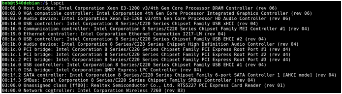
Adding a pipe (|) and grep command with “Wireless” as the filter yields the following
| To determine wireless card | lspci |
Capitalization is important- w vs W
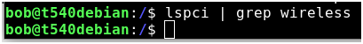
There we go.
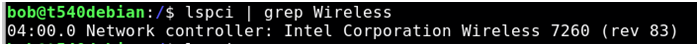
My T540p has an Intel Wireless 7260
Ok, great… but I am curious what else my system has. Specifically, I would like to know some more specifics.
There is a tool called lshw we can install that will reveal much more information.
| List hw | lshw |
Hmm looks like it needs to be installed.
| Install lshw | Sudo apt-get install lshw |
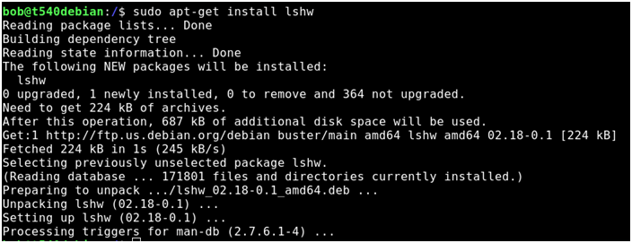
Try it again-
| List hardware | lshw |
Wow, information overload. And a note at the end saying I should run this as admin.
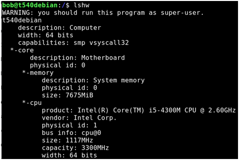
…
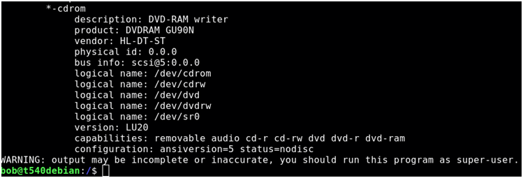
| List hardware as root user | Sudo lshw |
Jonny five just called: More Input! More input!
Interesting
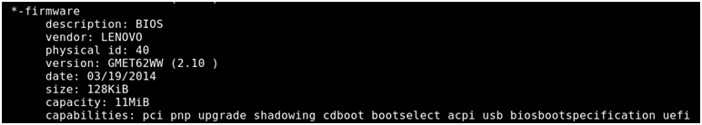
Very interesting
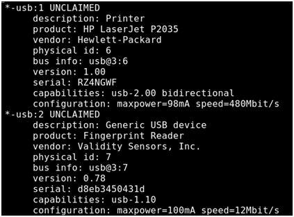
Running a bad command yields a bevy of options, including a “-sanitize” command that removes sensitive information.
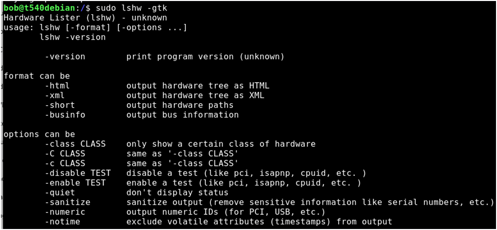
Useful for when posting online.
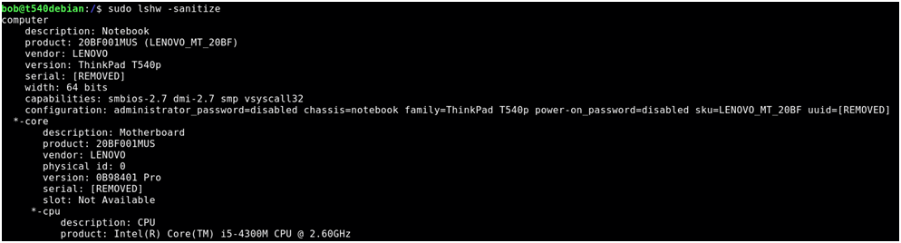
Apparently there is also a graphical version of this. We need to install the package
| Install list hardware graphical | Sudo apt-get install lshw-gtk |
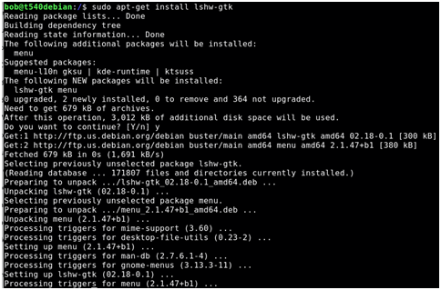
| List hardware in graphical mode | lshw-gtk |
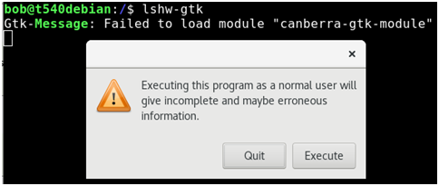
Let’s try it anyway: Execute!
Hmmm
Refresh button
Double click to start exploring
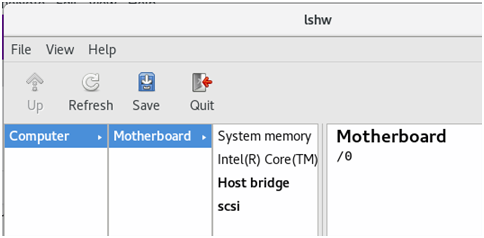
Way more information!
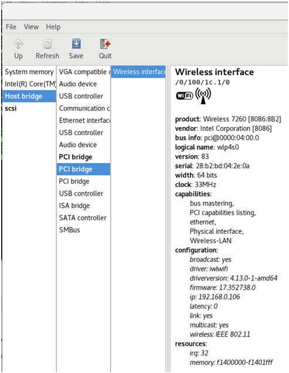